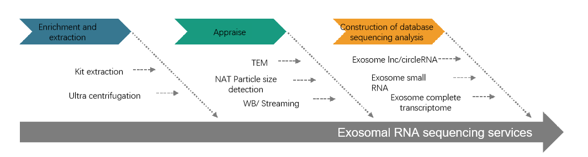
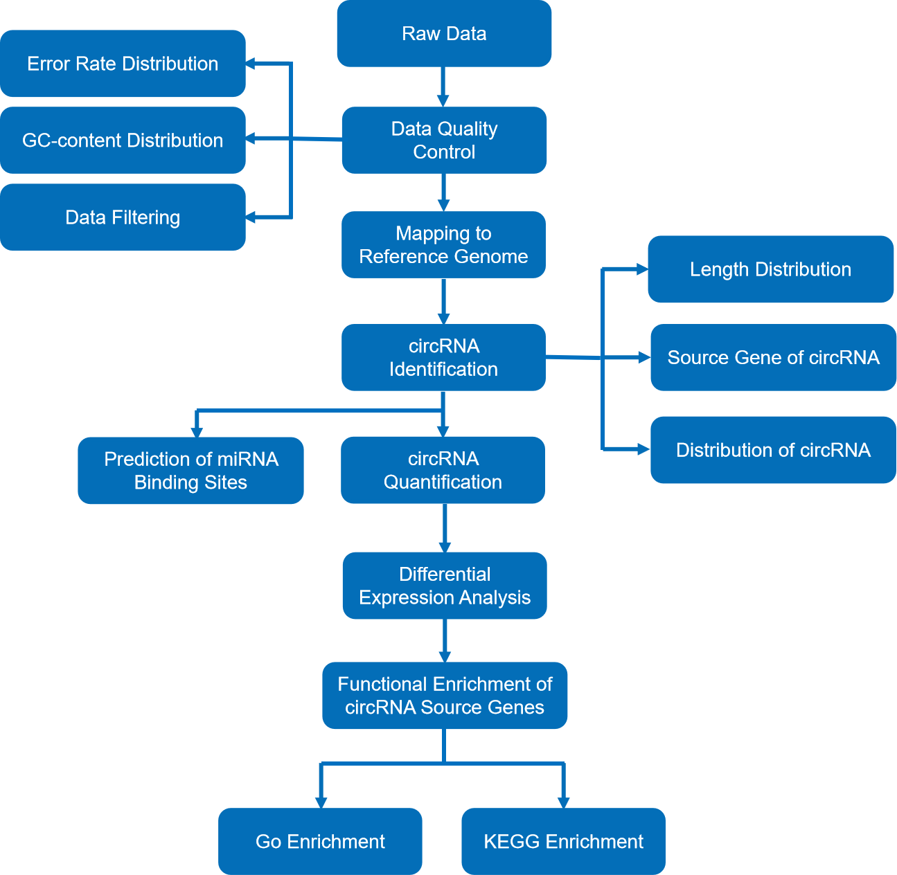
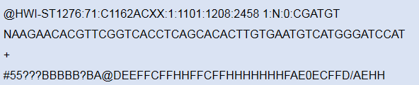
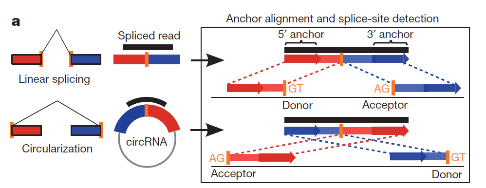

circRNA-seq Standard Analysis Report
| Contract ID | HXXXXX |
| Contract Name | XXXXXX |
| Batch ID | PXXXXXXXX |
| Reference Genome and Version | ensembl_92_homo_sapiens_grch38_primary |
| Report Time | 20250117140330 |
| Reminder | Partial results are presented in this report, while full results will be delivered in data release. Hyperlink of results in this report will be only valid in data release, after statement confirmation. |
Summary of important results
1.The number of circRNA identified in this project is as follows:
| Types | Total |
|---|---|
| circRNA | 36059 |
2.For each difference comparison combination, the number of diifferent circRNA, and the number of up-regulated circRNA and down-regulated circRNA were as follows:
| compare | all | up | down | threshold |
|---|---|---|---|---|
| Cortisol_HighvsCortisol_Low | 91 | 4 | 87 | DESeq2 pvalue<=0.05 |log2FoldChange|>=0.0 |
| PSS_HighvsPSS_Low | 11 | 0 | 11 | DESeq2 pvalue<=0.05 |log2FoldChange|>=0.0 |
| Z_HighvsZ_Low | 10 | 0 | 10 | DESeq2 pvalue<=0.05 |log2FoldChange|>=0.0 |
1 Introduction
1.1 Exosome concept and function
1.1.1 Exosome concept
Exosomes are extracellular vesicle structures that are produced from cytoplasm and released by cell membrane, with a diameter between 30 and 150nm, and carry a variety of proteins, lipids and nucleic acids of the mother cell (Kalluri R et al., 2020). Exosomes are abundant in sources, not only in plants, animals and microorganisms, but also in special liquids such as milk and beer. For example, exosomes are widely distributed in blood, saliva, urine, cerebrospinal fluid, milk and other body fluids, and almost all living cells may secrete exosomes. Therefore, the background signal of exosome research is mixed, and individual differences are relatively large.
1.1.2 Exosome function
Exosomes, with their heterogeneity and rich markers, can be associated with almost any disease and become a research hotspot in the medical field. Together with ctDNA and CTC, exosomes are called the "troika" of liquid biopsy. With the deepening of exosome research, its importance in human life activities has become increasingly prominent.
Figure 1 Exosomes function
1.2 Function and research significance of exosome circRNA
Different from ordinary tissues and cells, the RNA fragments in exosomes are relatively small, mainly concentrated in 25-200nt. The length of circular RNA (circRNA) is more than 200nt, which is mainly produced by pre-mRNA through variable shear processing. The 5 'end and 3' end covalently combine to form a closed structure, which is widely found in animals and plants. The special ring structure enables it to escape degradation by RNA enzymes and enhance its stability in vivo. In addition, it is somewhat conserved (lower than mRNA) and cell or tissue type specific.
1.3 Exosome enrichment and identification
1.3.1 Exosome enrichment
There are two main methods of exosome enrichment by Novogene source: ultra-fast centrifugation or kit method. In addition, SEC chromatographic separation, density gradient centrifugation and other methods can also be selected according to different sample types. The selection of appropriate methods to enrich exosomes is conducive to the smooth sequencing. Identification of exosomes
1.3.2 Exosome identification
Exosome identification can assist in proving that the studied material is the exosome itself and not another type of sample. The exosome identification services that Novogene can provide include electron microscopy identification, particle size detection and surface signature protein detection
The service flow of Novogene's exosomal RNA sequencing is shown as follows:

Figure 2 Exosomes RNA sequencing services
Note: Novogene provides a series of free exosome databases for teachers to annotate and search the Ncrnas they are interested in. For details, please log in the NovoMagic cloud platform for specific analysis. Novomagic https://magic.novogene.com/customer/main#/login (please contact the sales or operation related operations).
2 Library Construction and Sequencing
2.1 Sample Quality Control
Please refer to Novogene’s sample QC report.
2.2 Library Construction, Quality Control and Sequencing
Firstly, ribosomal RNA was removed from total RNA, followed by ethanol precipitation. Subsequently, the linear RNA was digested and sequencing libraries were generated. Briefly, after fragmentation, the first strand cDNA was synthesized using random hexamer primers. During the second strand cDNA synthesis, dUTPs were replaced with dTTPs in the reaction buffer. The directional library was ready after end repair, A-tailing, adapter ligation, size selection, USER enzyme digestion, amplification, and purification. The experimental procedures of RNA library preparation are shown in Figure 2.
The library was checked with Qubit and real-time PCR for quantification and bioanalyzer for size distribution detection. Quantified libraries will be pooled and sequenced on Illumina platforms, according to effective library concentration and data amount required.

Figure 2 Library construction workflow
3 Bioinformatics Analysis Pipeline
This is the standard bioinformatic analysis workflow for circRNA sequencing data with reference genome, as follows:

Figure 3 Bioinformatic analysis workflow
Method details involved in the project are available at methods
4 Analysis Results
Circular RNAs (circRNA) are a class of non-coding RNA molecules that do not have a 5' -end cap and a 3' -end poly(A) tail, and form a circular structure with covalent bonds. circRNA is formed by reverse splicing in a non-classical splicing way, which cannot encode proteins and has a low conservatism. non-coding RNA has been widely applied in tumor research, such as tumor occurrence, development, migration, invasion and drug resistance.
4.1 Data Quality Control
4.1.1 Raw Data
Original image data file from high-throughput sequencing (like Illumina) is transformed into sequenced reads (called Raw Data or Raw Reads) by CASAVA base recognition (Base Calling). Raw data are stored in FASTQ(fq) format files, which contain sequences of reads and corresponding base quality. Each read has four descriptive lines in as follow:

(1) Line 1: the at sign (@) followed by sequence identifiers and optional description info (such as
FASTA title line).
(2) Line 2: base sequences (raw read, A, G, C, and T).
(3) Line 3: the plus sign (+) optionally followed by the same Illumina sequence identifiers and description
information as Line 1.
(4) Line 4: the quality values for each base, corresponding to the data in Line 2.
Illumina Sequence Identifier:
| ID Symbol | meaning |
|---|---|
| HWI-ST1276 | Instrument – unique identifier of the sequencer |
| 71 | run number – Run number on instrument |
| C1162ACXX | FlowCell ID – ID of flowcell |
| 1 | LaneNumber – positive integer |
| 1101 | TileNumber – positive integer |
| 1208 | X – x coordinate of the spot. Integer which can be negative |
| 2458 | Y – y coordinate of the spot. Integer which can be negative |
| 1 | ReadNumber - 1 for single reads; 1 or 2 for paired ends |
| N | whether it is filtered - NB：Y if the read is filtered out, not in the delivered fastq file, N otherwise |
| 0 | control number - 0 when none of the control bits are on, otherwise it is an even number |
| CGATGT | Illumina index sequences |
The details of Sequencing identifier of Illumina are as follows:
(1) HWI-ST1276:71 HWI-ST1276, Instrument - unique identifier of the sequencer; 71, run number - Run
number on instrument.
(2) C1162ACXX:1:1101:1208:2458 means the coordinate of read on C1162ACXX (Flowcell ID) flowcell, line 1, 1101 tile
is(x=1208, y=2458).
(3) 1:N:0:CGATGT the first number is 1 or 2, 1 means single reads or the first read of paired ends, 2 means the
second of paired ends; the second letter means whether reads is adjusted(Y means yes, N means no); the third
number represent the number of Control Bits in sequence; six bases on the fourth place is Illumina index sequence.
4.1.2 Sequencing Data Filtering
The Sequenced Reads/raw reads often contain low quality reads or reads with adaptors. As we can see in Figure 4.1, which will affect the further analysis results. In order to avoid this, it's necessary to filter the raw reads under conditions to get the clean reads. Raw reads filtering conditions are as follows:
(1) Remove reads containing adaptors;
(2) Remove reads containing N > 10% (N represents base that could not be determined);
(3) The Qscore (Quality value) of over 50% bases of the read is <= 5.
Figure 4.1 Composition of raw data
Different color for different components
(1)Adaptor related: (reads containing adapter) / (total raw reads).
(2)Containing N: (reads with more than 10% N) / (total raw reads).
(3)Low quality: (reads of low quality) / (total raw reads).
(4)Clean reads: (clean reads) / (total raw reads).
Result Directory: QC_Filter
4.1.3 Examination of Sequencing Error Rate
The sequencing error rate of base is calculated from Phred score (Qphred) based on Equation 1 (equation 1: Qphred = -10log10e), while the Phred score is predicted from a probabilitymodel during base calling. Their relations are show below:
Relationship of base calling and Phred scores in Illumina Casava.
| Phred score | Error rate | Accuracy | Q-sorce |
|---|---|---|---|
| 10 | 1/10 | 90% | Q10 |
| 20 | 1/100 | 99% | Q20 |
| 30 | 1/1000 | 99.9% | Q30 |
| 40 | 1/10000 | 99.99% | Q40 |
Sequencing error rate is related to the base quality and is affected by many factors such as the sequencer, the sequencing reagents and the samples. For RNA-Seq technology, the distribution of sequencing error rate has two features:
(1) The error rate will increase when the length of sequenced reads increases. This is due to the consumption of chemical reagents during sequencing, which is common for all Illumina high-throughput sequencing platforms(Hardwick SA et al., 2016).
(2) The first six bases will suffer from higher sequencing error rate, and this is also the length of random primers which are required for reverse transcription during RNA-seq library construction. Therefore, it is speculated that the higher error rate in the first six bases is due to the incomplete bindings between random primers and RNA templates (Hardwick SA et al., 2016).
Figure 4.2 Distribution of sequencing error rate
The horizontal axis represents the position of reads, and the vertical axis represents the error rate.
Result Directory: QC_Error
4.1.4 GC Content Distribution

Figure 4.3 GC-content
Horizontal axis for reads position, vertical axis for single base percentage. Different color for different base type
Result Directory: QC_GC
4.1.5 Statistics of Sequencing Quality
Clean reads for follow-up analysis were obtained after raw data filtering, sequencing error rate checking and GC content distribution checking, and the data were summarized as shown in table 4.1.
Table 4.1 Summary of data production
| sample | library | raw_reads | raw_bases | clean_reads | clean_bases | error_rate | Q20 | Q30 | GC_pct |
|---|---|---|---|---|---|---|---|---|---|
| SPMlncID21 | ZRRL240001846-1a | 86971820 | 13.05G | 84041364 | 12.61G | 0.05 | 87.95 | 81.82 | 63.03 |
| SPMlncID04 | ZRRL230034357-1a | 89266912 | 13.39G | 82043566 | 12.31G | 0.03 | 95.19 | 89.81 | 43.17 |
| SPMlncID14 | ZRRL230034358-1a | 92827686 | 13.92G | 87758384 | 13.16G | 0.03 | 95.76 | 91.42 | 50.18 |
| SPMlncID15 | ZRRL230034359-1a | 82516826 | 12.38G | 80603604 | 12.09G | 0.03 | 95.76 | 90.95 | 48.53 |
| SPMlncID24 | ZRRL230034360-1a | 86395284 | 12.96G | 84308076 | 12.65G | 0.03 | 96.56 | 91.75 | 43.53 |
| SPMlncID02 | ZRRL230034361-1a | 81863974 | 12.28G | 77460450 | 11.62G | 0.03 | 95.4 | 89.95 | 42.37 |
| SPMlncID30 | ZRRL230034362-1a | 107147968 | 16.07G | 106094374 | 15.91G | 0.03 | 95.32 | 91 | 52.89 |
| SPMlncID19 | ZRRL230034363-1a | 93148272 | 13.97G | 91718050 | 13.76G | 0.03 | 95.2 | 90.06 | 46.95 |
| SPMlncID22 | ZRRL240001847-1a | 108014662 | 16.2G | 97222028 | 14.58G | 0.03 | 94.82 | 90.41 | 55.18 |
Result Directory: QC_Stat
| Q:The error rate will increase with the higher length of sequencing, what is the acceptable range of error rate? |
| A: Novogene set a high standard of sequencing quality. Generally, the error rate of a single base should be lower than 1%. In some special cases, the maximum error rate of a single base should not be greater than 6%. |
| Q:What is the difference between the align software of RNA data and of DNA data? |
| A:Due to the existence of splicing during transcription, a large portion of the measured reads spans different exons, and all RNA data alignment software will support the splice alignment of spliced reads. |
| Q:Does the full length of reads will be used for mapping, or does the head or tail of reads will be processed before mapping? |
| A:In our experiment, we use the standard RNA-seq kit, whose indexes are in the middle of the adapters and the sequencing will be executed for the sequences with indexes. In this way, the sequences of read 1 and read 2 are from the samples and there is no need to process the sequences in mapping. Even if the adapters are in sequences or the quality is low, the read will be removed. |
4.2 Mapping To Reference Genome
Perform alignments with HISAT2 to the reference. HISAT2 uses a graph-based alignment and has succeeded HISAT and TOPHAT2. HISAT2 is a fast and sensitive alignment program for mapping next-generation sequencing reads. Besides one global GFM index, HISAT2 also includes a large set of small GFM indexes that collectively cover the whole genome. These small indexes (local indexes), combined with multiple alignment strategies, enabled effective alignment of RNA-seq reads, particularly, reads spanning multiple exons(Kim D et al., 2015).

4.2.1 Overview of Mapping Status
Table 4.2 Summary of reads mapped to reference genome
| sample | total_reads | total_map | unique_map | multi_map | read1_map | read2_map | positive_map | negative_map | splice_map | unsplice_map | proper_map |
|---|---|---|---|---|---|---|---|---|---|---|---|
| SPMlncID21 | 84041364 | 34534492(41.09%) | 30462261(36.25%) | 4072231(4.85%) | 14511214(17.27%) | 15951047(18.98%) | 14204081(16.9%) | 16258180(19.35%) | 5858288(6.97%) | 24603973(29.28%) | 25475388(30.31%) |
| SPMlncID04 | 82043566 | 69936403(85.24%) | 67752727(82.58%) | 2183676(2.66%) | 35026025(42.69%) | 32726702(39.89%) | 33811765(41.21%) | 33940962(41.37%) | 1067840(1.3%) | 66684887(81.28%) | 62050390(75.63%) |
| SPMlncID14 | 87758384 | 71420609(81.38%) | 68705140(78.29%) | 2715469(3.09%) | 34867775(39.73%) | 33837365(38.56%) | 34117871(38.88%) | 34587269(39.41%) | 3715652(4.23%) | 64989488(74.06%) | 61050656(69.57%) |
| SPMlncID15 | 80603604 | 69378441(86.07%) | 67036006(83.17%) | 2342435(2.91%) | 33992344(42.17%) | 33043662(41.0%) | 33327774(41.35%) | 33708232(41.82%) | 1087966(1.35%) | 65948040(81.82%) | 61331132(76.09%) |
| SPMlncID24 | 84308076 | 76127594(90.3%) | 74133568(87.93%) | 1994026(2.37%) | 37342124(44.29%) | 36791444(43.64%) | 36988440(43.87%) | 37145128(44.06%) | 614110(0.73%) | 73519458(87.2%) | 71100382(84.33%) |
| SPMlncID02 | 77460450 | 67596117(87.27%) | 65519590(84.58%) | 2076527(2.68%) | 33870754(43.73%) | 31648836(40.86%) | 32704601(42.22%) | 32814989(42.36%) | 402213(0.52%) | 65117377(84.07%) | 60564166(78.19%) |
| SPMlncID30 | 106094374 | 70653746(66.6%) | 62900109(59.29%) | 7753637(7.31%) | 31327696(29.53%) | 31572413(29.76%) | 30959199(29.18%) | 31940910(30.11%) | 15198832(14.33%) | 47701277(44.96%) | 55786662(52.58%) |
| SPMlncID19 | 91718050 | 73430090(80.06%) | 70333308(76.68%) | 3096782(3.38%) | 36482104(39.78%) | 33851204(36.91%) | 35047633(38.21%) | 35285675(38.47%) | 2778871(3.03%) | 67554437(73.65%) | 62675544(68.34%) |
| SPMlncID22 | 97222028 | 69322801(71.3%) | 66146963(68.04%) | 3175838(3.27%) | 33058049(34.0%) | 33088914(34.03%) | 32879092(33.82%) | 33267871(34.22%) | 5481035(5.64%) | 60665928(62.4%) | 62978154(64.78%) |
-
(1) sample: SampleID.
(2) total_reads: Total clean reads used for analysis.
(3) total_map: Number and percentage of reads aligned to the genome, the ratio should higher than 70%, total mapping rate: (mapped reads)/(total reads)*100.
(4) unique_map: Number and percentage of reads aligned to the unique position of the reference genome (for subsequent quantitative data analysis), unique mapping rate: (uniquely mapped reads)/(total reads)*100.
(5) Multi_map: number and percentage of reads aligned to multiple locations in the reference genome, multiple mapping rate: (multiple mapped reads)/(total reads)*100.
(6) read1_map: Number and percentage of read1 aligned to the reference genome.
(7) read2_map: Number and percentage of read2 aligned to the reference genome.
(8) positive_map: Number and percentage of reads aligned to the positive chain of the reference genome.
(9) negative_map: Number and percentage of reads aligned to the negative chain of the reference genome.
(10) splice_map: Number of spliced reads on the genome and its percentage.splice_map: Number of spliced reads on the genome and its percentage.
(11) unsplice_map: Number of complete reads aligned to genome and its percentage.
(12) proper_map: Number of paired read1 and read2 aligned to the genome and its percentage.
Result Directory:Mapping_Stat
4.2.2 Reads Distribution in Reference Genome
Mapped regions can be classified as exons, introns, or intergenic regions. Exon-mapped reads should be the most abundant type of reads when the reference genome is well-annotated. Intron-reads may be derived from pre-mRNA contamination or intron-retention from alternative splicing. Reads mapped to intergenic regions may be derived from ncRNA or a small fraction of DNA contamination (Breschi A et al., 2017). The graphical representations are shown as below:

Figure 4.4 Sequencing reads in the genomic region
(1) exon: The number of reads aligned to exon regions of the genome and its proportion in clean reads.
(2) Intron: The number of reads aligned to intron regions of the genome and its proportion in clean reads.
(3) Intergenic: The number of reads aligned to intergenic regions of the genome and its proportion in clean reads.
Result Directory:Mapping_Region
4.2.3 Visualization of Mapping Results
Files provided in BAM format--a standard file format that contains mapping results–indicating the information of the corresponding referenced genome and gene annotations for some species. The Integrative Genomics Viewer (IGV) is a recommended software for visualizing data from BAM files.
(1) It displays the positions of single or multiple reads in the reference genome, as well as read
distribution between annotated exons, introns or intergenic regions, both in adjustable scale;
(2) It displays the read abundance of different regions to demonstrate their expression levels, in adjustable
scale;
(3) It provides annotation information for both genes and splicing isoforms;
(4) It provides other related annotation information;
(5) It displays annotations downloaded from remote servers and/or imported from local machines;
(6) IGV browser usage can refer to our provided documentation IGVQuickStart

Figure 4.5 IGV Browser Comparison Visualization of Results
4.3 CircRNA Identification
Find_circ and CIRI are the two most commonly used circRNA identification software.
The basic principle of find_circ(Memczak S et al., 2013) for circRNA identification is to extract 20-nt anchor sequence from both ends of reads that are not compared to the reference sequence, and then compare each pair of anchor sequence with the reference sequence again. If the 5' end of Anchor sequence is compared to the reference sequence (the start and end sites are denoted as A3 and A4 respectively), and the 3' end of anchor sequence is compared to the upstream of this site (the start and end sites are denoted as A1 and A2 respectively), If there is a splicing site (GT-AG) between A2 and A3 of the reference sequence, this read is used as a candidate circRNA. Finally, the candidate circRNA whose read count is greater than or equal to 2 is used as the identification circRNA.

Figure 4.6 find_circ identification schematic
CIRI(Gao Y et al., 2015) first analyzed the CIGAR values in Sam files and scanned PCC signals (paired chiastic clipping signals) from Sam files. Junction reads filter based on PEM and GT-AG signals. Cooling junction reads are detected using a DM algorithm to further filter and block false positives caused by homologous similarities and duplicated sequences.

Figure 4.7 CIRI identification pipline
By default, we will choose the two software for joint analysis to improve the accuracy of circRNA identification. However, due to the limitations of the software itself, the particularity of species or samples, there may be cases where a software cannot identify circRNA. Therefore, we will choose software according to the actual situation of the project.
Result directory of CircRNA identification: novel_circRNAs
4.3.1 Identification Result
Partial results of CircRNA identification are shown in the table below:
Table 4.3 CircRNA Identification Results Display(part)
| circRNA_ID | Chr | start | end | strand | full_length | spliced_length | gene_id | feature | samples | junction_read | non_junction_read | source_gene_name |
|---|---|---|---|---|---|---|---|---|---|---|---|---|
| hsa_circ_0059286 | 20 | 3296860 | 3298175 | - | 1315 | 236 | ENSG00000088854; | exon:3298029-3298175 | SPMlncID21,SPMlncID19 | 2,6 | 13,30 | C20orf194 |
| hsa_circ_0060664 | 20 | 48951322 | 48952884 | + | 1562 | 327 | ENSG00000124198; | exon:48951323-48951469,exon:48952705-48952884 | SPMlncID30,SPMlncID19 | 4,5 | 372,76 | ARFGEF2 |
| hsa_circ_0059660 | 20 | 25302218 | 25309575 | - | 7357 | 538 | ENSG00000100997; | exon:25302219-25302346,exon:25303550-25303628,exon:25309446-25309575 | SPMlncID30 | 2 | 247 | ABHD12 |
| hsa_circ_0060446 | 20 | 43635925 | 43637253 | + | 1328 | 197 | ENSG00000101052; | exon:43635926-43636013,exon:43637145-43637253 | SPMlncID30 | 12 | 114 | IFT52 |
-
(1) circRNA_ID: CircRNA ID
(2) Chr: Chromosome number
(3) start: The starting site of the full length of circRNA.
(4) end: the End site of the full length of circRNA.
(5) strand: Positive and negative chain information.
(6) full_length: The full length of circRNA.
(7) spliced_length: The spliced length of circRNA.
(8) gene_id: CircRNA source gene id.
(9) feature_id: CircRNA shearing information (for non-linearized RNA library construction, this shearing information may contain linear Rnas matching at this location).
(10) samples: Samples containing the circRNA (separated by commas).
(11) junction_read: Junction read number (order corresponding to samples).
(12) non_junction_read: Number of non-junction reads (in order corresponding to samples).
(13) source_gene_name: CircRNA source gene name
4.3.2 CircRNA source statistics
CircRNA can be derived from exon or intron splicing, and some circRNA can also be derived from intergenic. The following figure shows the sources of circRNA in all samples:
Figure 4.8 The source of the circRNA
Abscissa: sample name; Ordinate: circRNA source type ratio
Result directory of length distribution of circRNAs: plot_novel_genomic_feature
4.3.3 Distribution of circRNA in the chromosome
Density statistics were conducted for all circRNA of each sample compared to each chromosome on the genome, and circRNA distribution on each chromosome was ploted by circos.

Figure 4.9 Distribution of circRNA in the chromosome
Circos diagram of density distribution of all circrnas on chromosomes of each sample. Outer ring as the chromosome location map, outside figures for chromosome number, with different colors to distinguish different chromosomes, the scale reflects chromosome coordinates, the unit is M (millions). inner ring chromosome each reaction coordinate interval circRNA density, display is a scatter diagram.
Result directory of distribution of circRNA in the chromosome: circRNA_chr_distribution
4.4 Quantitative analysis of CircRNA
Quantification is the basis for significance analysis of expression differences. The expression levels of known and new circRNA in each sample were counted and normalized by TPM (Zhou et al., 2010).
The formula: Normalized expression level = (readCount*1,000,000)/libsize note: libsize: sum of sample circRNA readCount
4.4.1 CircRNA quantification
The quantitative results of circRNA are as follows:
Table 4.5 Expression of circRNAs
| circRNA | SPMlncID21_readcount | SPMlncID04_readcount | SPMlncID14_readcount | SPMlncID15_readcount | SPMlncID24_readcount | SPMlncID02_readcount | SPMlncID30_readcount | SPMlncID19_readcount | SPMlncID22_readcount | SPMlncID21_tpm | SPMlncID04_tpm | SPMlncID14_tpm | SPMlncID15_tpm | SPMlncID24_tpm | SPMlncID02_tpm | SPMlncID30_tpm | SPMlncID19_tpm | SPMlncID22_tpm |
|---|---|---|---|---|---|---|---|---|---|---|---|---|---|---|---|---|---|---|
| hsa_circ_0000002 | 6 | 0 | 3 | 0 | 0 | 0 | 2 | 0 | 0 | 20.557026905722 | 0 | 55.8170688596573 | 0 | 0 | 0 | 3.07056936032364 | 0 | 0 |
| hsa_circ_0000007 | 0 | 0 | 0 | 0 | 0 | 0 | 0 | 3 | 0 | 0 | 0 | 0 | 0 | 0 | 0 | 0 | 16.8049339286014 | 0 |
| hsa_circ_0000008 | 0 | 0 | 0 | 0 | 0 | 0 | 0 | 26 | 0 | 0 | 0 | 0 | 0 | 0 | 0 | 0 | 145.642760714546 | 0 |
| hsa_circ_0000011 | 12 | 0 | 0 | 0 | 0 | 0 | 8 | 7 | 0 | 41.1140538114441 | 0 | 0 | 0 | 0 | 0 | 12.2822774412946 | 39.21151250007 | 0 |
| hsa_circ_0000014 | 62 | 5 | 9 | 3 | 0 | 0 | 95 | 43 | 0 | 212.422611359128 | 289.687137891078 | 167.451206578972 | 325.662179765523 | 0 | 0 | 145.852044615373 | 240.870719643287 | 0 |
| hsa_circ_0000015 | 52 | 0 | 14 | 0 | 0 | 0 | 86 | 54 | 0 | 178.160899849591 | 0 | 260.479654678401 | 0 | 0 | 0 | 132.034482493916 | 302.488810714826 | 0 |
| hsa_circ_0000017 | 5 | 0 | 0 | 0 | 0 | 0 | 6 | 2 | 0 | 17.1308557547684 | 0 | 0 | 0 | 0 | 0 | 9.21170808097091 | 11.2032892857343 | 0 |
| hsa_circ_0000018 | 16 | 3 | 12 | 0 | 0 | 0 | 51 | 23 | 0 | 54.8187384152588 | 173.812282734647 | 223.268275438629 | 0 | 0 | 0 | 78.2995186882528 | 128.837826785944 | 0 |
| hsa_circ_0000019 | 2 | 0 | 2 | 0 | 0 | 0 | 3 | 0 | 0 | 6.85234230190735 | 0 | 37.2113792397715 | 0 | 0 | 0 | 4.60585404048546 | 0 | 0 |
| hsa_circ_0000020 | 5 | 0 | 0 | 0 | 0 | 0 | 0 | 0 | 0 | 17.1308557547684 | 0 | 0 | 0 | 0 | 0 | 0 | 0 | 0 |
-
(1) "circRNA.readcount" (First Column): represent the circRNA_ID.
(2) "sample_name.readcount": represent the readcount of each sample.
(3) "sample name.TPM": represent readcount (TPM normalization) of each sample.
(4) The readcount of this section is junction_read and non_junction_read.
Result directory of CircRNA quantification: Readcount_TPM
4.4.2 CircRNA expression level distribution
The expression values of all circRNA in each sample were calculated as TPM, and the overall gene expression pattern of the sample was displayed through the TPM boxplot, as shown in the figure:
Figure 4.11 TPM boxplot
X axis represents the name of the sample. Y axis indicates the log2(TPM+1). Parameters of box plots are indicated, including maximum, upper quartile, mid-value, lower quartile and minimum.
Result directory of TPM boxplot: TPM_boxplot
4.5 CircRNA difference analysis
The input data for circRNA expression level analysis are the read count values. For samples with biological replicates, DESeq2(Love MI et al., 2014) was used to do the analysis, as this method has already eliminate the biological variation, the threshold is normally set as: padj <= 0.05. For the samples without biological replicates, TMM was used to normalize the read count values, and the edgeR(Robinson MD et al., 2010) was then used to do the following analysis, the threshold is normally set as: qvalue <= 0.05 & |log2(foldchange)|>=1. The differential expression of circRNA listed was as follows:
If qvalue <= 0.05 is too few, pvalue <= 0.05 is used for differential screening. See Summary of Important Results for the specific differential screening threshold
4.5.1 Differential circRNA analysis results
Table 4.6 Differential expression of circRNAs
| circRNA | Z_High_readcount | Z_Low_readcount | log2FoldChange | pvalue | padj | significant |
|---|---|---|---|---|---|---|
| novel_circ_0005822 | 0 | 68.3483848389454 | -7.90315624375632 | 0.0210742713974434 | 0.859223387868409 | TRUE |
| novel_circ_0059469 | 0 | 52.7017417050917 | -7.51857307988875 | 0.0245916812160952 | 0.859223387868409 | TRUE |
| hsa_circ_0003273 | 0 | 33.2958605199608 | -6.95529812723741 | 0.0278335430319213 | 0.859223387868409 | TRUE |
| novel_circ_0008289 | 0 | 31.9762129293596 | -6.89521011690643 | 0.0299757152259605 | 0.859223387868409 | TRUE |
| hsa_circ_0001206 | 0 | 27.7472944578181 | -6.70020263368328 | 0.0339723168526369 | 0.859223387868409 | TRUE |
| hsa_circ_0005017 | 0 | 25.6761139689009 | -6.58843379059789 | 0.0377891846414831 | 0.859223387868409 | TRUE |
| hsa_circ_0006729 | 0 | 38.8462171630549 | -7.05425549464664 | 0.0409765545582009 | 0.859223387868409 | TRUE |
| novel_circ_0003029 | 0 | 23.5259328418541 | -6.46876565591112 | 0.0410238755441812 | 0.859223387868409 | TRUE |
| hsa_circ_0006545 | 0 | 23.0450613625913 | -6.44419137723385 | 0.0413776397155935 | 0.859223387868409 | TRUE |
| hsa_circ_0050851 | 0 | 17.8759507374341 | -5.95181281683695 | 0.0451308413165933 | 0.859223387868409 | TRUE |
-
(1) ID: circRNA ID.
(2) Group1: readcount values of group1 after normalized.
(3) Group2: readcount values of group2 after normalized.
(4) log2FoldChange：log2(Group1/Group2)。
(5) pvalue: the pvalue in hypergeometric test.
(6) padj: The pvalue after normalized. The smaller the qvalue is, the more significant is the difference.
Result directory of Differential expression of circRNAs: diff_expression
4.5.2 Differential circRNA results
The overall distribution of differential circRNA could be inferred by volcanic map, and the differential circRNA could be screened by the evaluation of Fold change and padj/qvalue.
Figure 4.12 Volcano Plot of differential circRNAs
The x-axis shows the fold change in circRNA expression between different samples, and the y-axis shows the statistical significance of differences. Statistically significant differences are represented by red dots.
Result directory of Differential circRNA volcanoplot: Volcanoplot
4.5.3 Clustering of differential circRNAs
Differential circRNA clustering analysis was used to judge the clustering pattern of differential circRNA expression under different experimental conditions. A differential circRNA set will be obtained for each comparison combination, and the TPM value of the combination of all the differential circRNA in each experimental group/sample will be combined for hierarchical clustering analysis, K-means clustering analysis and SOM clustering analysis.
Figure 4.13 Clustering of differential circRNAs
The overall results of FPKM cluster analysis, clustered using the log2(FPKM+1) value. Red color indicates genes with high expression levels, and green color indicates genes with low expression levels. The color ranging from red to blue indicates that log2(FPKM+1) values wherefrom large to small. The chromosome to which each gene belongs, gene's length, and the biological type of the gene are also added to the heatmap.
Result directory of Clustering of differential circRNAs: Hcluster_heatmap
4.5.4 CircRNA Venn diagrams
When the number of comparison combinations is greater than or equal to 2 and less than 5, the number of different circrnas obtained in each group can be counted and drawn into a Venn diagram to visually display the common and unique number of different circRNA in each comparison combination (if there are only two samples, the Venn diagram between the two samples can be drawn).
Figure 4.14 Difference circRNA venn diagram
The circle represents each comparison combination, the sum of the numbers in each large circle represents the total number of different circRNA in the comparison combination, and the overlapping part of the circle represents the number of circRNA shared by the comparison combination (when there are only two samples, The number in each large circle represents the circRNA expressed in this sample, and the overlapped part of the circle represents the circRNA expressed in the sample.)
4.6 Enrichment analysis of different circRNA source genes
After obtaining the differentially expressed circRNA among the groups, the corresponding relationship between circRNA and its source genes was determined. ClusterProfiler (Yu G et al., 2012) was used to conduct GO functional enrichment analysis and KEGG pathway enrichment analysis on the source gene sets of differentially expressed circRNA. Enrichment analysis is based on hypergeometric distribution principle. The result of enrichment analysis was that all differential gene sets, up-regulated differential gene sets and down-regulated differential gene sets of each differential comparison combination were enriched. The table shown in this report shows the enrichment analysis results of a selected comparison combination, and the picture shows the enrichment analysis results of all combinations.

Figure 4.15 Gene Enrichment Analysis Schematic
Here, N is the number of all genes with a GO or KEGG annotation, n is the number of DEGs in N, M is the number of all genes annotated to specific terms, and m is number of DEGs in M
4.6.1 GO Enrichment Analysis
Gene Ontology (GO) is a standardized classification system widely used for gene function, which supplies a set of controlled vocabulary to describe the property of genes and gene products comprehensively. There are 3 ontologies in GO system: molecular function, cellular component ,and biological process. The basic unit of GO is GO-term, each of which belongs to one type of ontology.
GO enrichment analysis is used for genes of circRNAs. All GO terms are provided with significantly enriched in the genes of circRNAs, comparing to the reference genes in background, as well as the genes corresponding to certain biological functions. The results reveal the functions significantly related with source genes of circRNAs.
Table 4.7 Partially displayed results of GO enrichment analysis
| Category | GOID | Description | GeneRatio | BgRatio | pvalue | padj | geneID | geneName | Count |
|---|---|---|---|---|---|---|---|---|---|
| BP | GO:0006355 | regulation of transcription, DNA-templated | 5/17 | 231/1697 | 0.0695196079900034 | 0.428415890265888 | ENSG00000284057/ENSG00000111596/ENSG00000095794/ENSG00000111783/ENSG00000158711 | AP001273.2/CNOT2/CREM/RFX4/ELK4 | 5 |
| BP | GO:0051252 | regulation of RNA metabolic process | 5/17 | 231/1697 | 0.0695196079900034 | 0.428415890265888 | ENSG00000284057/ENSG00000111596/ENSG00000095794/ENSG00000111783/ENSG00000158711 | AP001273.2/CNOT2/CREM/RFX4/ELK4 | 5 |
| BP | GO:1903506 | regulation of nucleic acid-templated transcription | 5/17 | 231/1697 | 0.0695196079900034 | 0.428415890265888 | ENSG00000284057/ENSG00000111596/ENSG00000095794/ENSG00000111783/ENSG00000158711 | AP001273.2/CNOT2/CREM/RFX4/ELK4 | 5 |
| BP | GO:2001141 | regulation of RNA biosynthetic process | 5/17 | 231/1697 | 0.0695196079900034 | 0.428415890265888 | ENSG00000284057/ENSG00000111596/ENSG00000095794/ENSG00000111783/ENSG00000158711 | AP001273.2/CNOT2/CREM/RFX4/ELK4 | 5 |
| BP | GO:0019219 | regulation of nucleobase-containing compound metabolic process | 5/17 | 233/1697 | 0.0716943973740945 | 0.428415890265888 | ENSG00000284057/ENSG00000111596/ENSG00000095794/ENSG00000111783/ENSG00000158711 | AP001273.2/CNOT2/CREM/RFX4/ELK4 | 5 |
| BP | GO:0009889 | regulation of biosynthetic process | 5/17 | 234/1697 | 0.072796746568371 | 0.428415890265888 | ENSG00000284057/ENSG00000111596/ENSG00000095794/ENSG00000111783/ENSG00000158711 | AP001273.2/CNOT2/CREM/RFX4/ELK4 | 5 |
| BP | GO:0010556 | regulation of macromolecule biosynthetic process | 5/17 | 234/1697 | 0.072796746568371 | 0.428415890265888 | ENSG00000284057/ENSG00000111596/ENSG00000095794/ENSG00000111783/ENSG00000158711 | AP001273.2/CNOT2/CREM/RFX4/ELK4 | 5 |
| BP | GO:0031326 | regulation of cellular biosynthetic process | 5/17 | 234/1697 | 0.072796746568371 | 0.428415890265888 | ENSG00000284057/ENSG00000111596/ENSG00000095794/ENSG00000111783/ENSG00000158711 | AP001273.2/CNOT2/CREM/RFX4/ELK4 | 5 |
| BP | GO:2000112 | regulation of cellular macromolecule biosynthetic process | 5/17 | 234/1697 | 0.072796746568371 | 0.428415890265888 | ENSG00000284057/ENSG00000111596/ENSG00000095794/ENSG00000111783/ENSG00000158711 | AP001273.2/CNOT2/CREM/RFX4/ELK4 | 5 |
| BP | GO:0010468 | regulation of gene expression | 5/17 | 237/1697 | 0.0761636297932929 | 0.428415890265888 | ENSG00000284057/ENSG00000111596/ENSG00000095794/ENSG00000111783/ENSG00000158711 | AP001273.2/CNOT2/CREM/RFX4/ELK4 | 5 |
-
(1) Category: Classification of GO databases, including biological processes(BP), cellular components(CC), molecular function(MF).
(2) ID: Unique identification id of Gene Ontology database.
(3) Description: Function description corresponding to the GO number.
(4) GeneRatio: Ratio between the number of differentially expressed genes in each GO term and all differentially expressed genes that can be found in GO database.
(5) BgRatio: In background GO database, the ratio of all genes concerning this GO term to all genes.
(6) pvalue: Statistics category term; abbreviation for probability value.
(7) padj: Adjusted p-value. Generally, GO Terms with Corrected_pValue < 0.05 are significant enrichment.
(8) geneID: Differentially expressed genes in this term.
(9) geneName: Differentially expressed genes in this term.
(10) Count: The number of difference gene annotated to GO number.
(11) Up: Number of up expressed genes concerning this GO term.
(12) Up_Gene_id: Up expressed gene id concerning this GO term.
(13) Down: Number of down expressed genes concerning this GO term.
(14) Down_Gene_id: Down expressed gene id concerning this GO term.
In the results of the GO enrichment analysis, the most significant 30 Terms were selected for display. If the results are less than 30, all terms would be drawn, as shown in the following figure. In this figure, the abscissa is GO Term. The ordinate is the significance level of GO Term enrichment. Higher values correspond to higher significance. The different colors represent the three GO subclasses of BP, CC,MF.
Figure 4.16 Histogram of source gene GO enrichment
The abscissa in the figure is GO Term, and the ordinate is GO Term's level of significance of enrichment, expressed as -log10(padj). Different colors represent different functional categories
From the GO enrichment analysis results, the most significant 30 GO Terms were selected for display. If the results are less than 30, all Terms would be drawn. In the figure, the abscissa is the ratio of the number of differential genes linked with the GO Term to the total number of differential genes, and the ordinate is GO Term. The size of a point represents the number of genes annotated to a specific GO Term, and the color from red to purple represents the significant level of the enrichment.
Figure 4.17 GO Enrichment Analysis Scatter Plot
The abscissa in the graph is the ratio of the differential gene number to the total number of differential genes on the GO Term, and the ordinate is GO Term.
(Directed Acyclic Graph，DAG) could visualize the enriched GO Term of differential expression source genes and its hierarchy. In this graph, branch means the hierarchical relation, and the function ranges become increasingly specific from the top to bottom. In general, the top 5 results of GO enrichment analysis are chosen as the main nodes (shown by box) in directed acyclic graph, and related GO Term are shown together by hierarchical connections. The enrichment degree is illustrated by color shades, the darker the shades are, the higher the enrichment degree is. In this project, DAG of biological process, molecular function and cellular component were drawn sequentially.


Figure 4.18 GO Enrichment Analysis DAG Chart
Each node represents a GO term, and the box represents the enrichment level of TOP5 GOTerms. The depth of the color represents the degree of enrichment, the darker the color is, the higherthe enrichment degree is. Each node shows the name of the term and the padj of enrichment analysis
Result directory of GO enrichment analysis: GO_enrich
4.6.2 Enrichment Analysis
The interactions of multiple genes may be involved in certain biological functions. KEGG (Kyoto Encyclopedia of Genes and Genomes) is a collection of manually curated databases dealing with genomes, biological pathways, diseases, drugs, and chemical substances. KEGG is utilized for bioinformatics research and education, including data analysis in genomics, metagenomics, metabolomics and other omics studies. Pathway enrichment analysis identifies significantly enriched metabolic pathways or signal transduction pathways associated with differentially expressed genes compared with the whole genome background.
Table 4.8 KEGG enrichment list of source genes
| KEGGID | Description | GeneRatio | BgRatio | pvalue | padj | geneID | geneName | keggID | Count |
|---|---|---|---|---|---|---|---|---|---|
| hsa05202 | Transcriptional misregulation in cancer | 4/28 | 66/2932 | 0.00319380712464657 | 0.424776347577994 | ENSG00000171988/ENSG00000169398/ENSG00000158711/ENSG00000104885 | JMJD1C/PTK2/ELK4/DOT1L | hsa:221037/hsa:5747/hsa:2005/hsa:84444 | 4 |
| hsa04666 | Fc gamma R-mediated phagocytosis | 3/28 | 50/2932 | 0.011327664099601 | 0.559220690293748 | ENSG00000153317/ENSG00000117461/ENSG00000171132 | ASAP1/PIK3R3/PRKCE | hsa:50807/hsa:8503/hsa:5581 | 3 |
| hsa04370 | VEGF signaling pathway | 2/28 | 22/2932 | 0.0180576859256676 | 0.559220690293748 | ENSG00000117461/ENSG00000169398 | PIK3R3/PTK2 | hsa:8503/hsa:5747 | 2 |
| hsa04930 | Type II diabetes mellitus | 2/28 | 23/2932 | 0.0196616458757057 | 0.559220690293748 | ENSG00000117461/ENSG00000171132 | PIK3R3/PRKCE | hsa:8503/hsa:5581 | 2 |
| hsa05146 | Amoebiasis | 2/28 | 27/2932 | 0.0266450736701654 | 0.559220690293748 | ENSG00000117461/ENSG00000169398 | PIK3R3/PTK2 | hsa:8503/hsa:5747 | 2 |
| hsa00310 | Lysine degradation | 2/28 | 36/2932 | 0.0453736999858787 | 0.559220690293748 | ENSG00000187172/ENSG00000104885 | BAGE2/DOT1L | hsa:58508/hsa:84444 | 2 |
| hsa04933 | AGE-RAGE signaling pathway in diabetic complications | 2/28 | 36/2932 | 0.0453736999858787 | 0.559220690293748 | ENSG00000117461/ENSG00000171132 | PIK3R3/PRKCE | hsa:8503/hsa:5581 | 2 |
| hsa05222 | Small cell lung cancer | 2/28 | 36/2932 | 0.0453736999858787 | 0.559220690293748 | ENSG00000117461/ENSG00000169398 | PIK3R3/PTK2 | hsa:8503/hsa:5747 | 2 |
| hsa04750 | Inflammatory mediator regulation of TRP channels | 2/28 | 37/2932 | 0.0476876998694875 | 0.559220690293748 | ENSG00000117461/ENSG00000171132 | PIK3R3/PRKCE | hsa:8503/hsa:5581 | 2 |
| hsa04670 | Leukocyte transendothelial migration | 2/28 | 41/2932 | 0.0573633000055058 | 0.559220690293748 | ENSG00000117461/ENSG00000169398 | PIK3R3/PTK2 | hsa:8503/hsa:5747 | 2 |
-
(1) KEGGID: Unique identification id of KEGG database.
(2) Description: Function description of this pathway.
(3) GeneRatio: Ratio between the number of differentially expressed genes in each pathway and all differentially expressed genes that can be found in KEGG database.
(5) BgRatio: In background KEGG database, the ratio of all genes concerning this KEGG pathway to all genes included.
(6) pvalue: Statistics category term; abbreviation for probability value.
(7) padj: Adjusted p-value. Generally, KEGG pathways with Corrected_pValue < 0.05 are significant enrichment.
(8) geneID: Differentially expressed genes in this pathway.
(9) geneName: Differentially expressed genes in this pathway.
(10) keggID: Pathway gene id.
(11) Count: Number of differentially expressed genes concerning this pathway.
(12) Up: Number of up expressed genes concerning this KEGG pathway.
(13) Up_Gene_id: Up expressed gene id concerning this KEGG pathway.
(14) Down: Number of down expressed genes concerning this KEGG pathway.
(15) Down_Gene_id: Down expressed gene id concerning this KEGG pathway.
In the KEGG enrichment results, the most significant 20 KEGG pathways were selected for display. If the results are less than 20, all pathways would be drawn, as shown in the following figure. In this figure, the abscissa is the KEGG pathway, and the ordinate is the significance level of the pathway enrichment. Higher values correspond to higher significance.
Figure 4.19 Histogram of KEGG enrichment of the source gene
The abscissa is the KEGG pathway, and the ordinate is the significance level of pathway enrichment
From the KEGG enrichment results, the most significant 20 KEGG pathways were selected for display. If the results are less than 20, all pathways would be drawn. In this figure, the abscissa is the ratio of the number of differential genes linked with the KEGG pathway to the total number of differential genes. The ordinate is KEGG Pathway. The size of a point represents the number of genes annotated to a specific KEGG pathway. The color from red to purple represents the significant level of the enrichment.
Figure 4.20 KEGG enrichment scatter plot
The abscissa in the graph is the ratio of the number of differential genes on the KEGG pathway to the total number of differential genes, and the ordinate is KEGG pathway
KEGG enrichment pathway shows the DEGs significantly enriched pathways. In the diagram, if this node contains up-regulated genes, the KO node is labeled in red. If the node contains down-regulated genes, the KO node is labeled in green. If the node contains both up and down-regulated genes, the labeled color is yellow.
Figure 4.21 KEGG enrichment pathway
Result directory of GO enrichment analysis: KEGG_enrich
4.7 Prediction of miRNA binding sites
CircRNA can inhibit the function of miRNA by binding miRNA (Hansen TB et al., 2013). Therefore, miRNA binding site analysis of identified circRNA is helpful to further study the function of circRNA. For animals and plants, miRanda software was used in this procedure to predict the miRNA binding sites of circRNA after shearing.
Results of circRNA-miRNA binding sites are as follows:
Table 4.9 CircRNA target miRNA site statistics
| COL_1 | COL_2 | COL_3 | COL_4 | COL_5 | COL_6 | COL_7 | COL_8 | COL_9 | COL_10 |
|---|---|---|---|---|---|---|---|---|---|
| >>hsa-let-7a-5p | novel_circ_0016455_full_seq | 157.00 | -17.35 | 157.00 | -17.35 | 32 | 22 | 314 | 86 |
| >>hsa-let-7a-5p | novel_circ_0067453_full_seq | 145.00 | -13.39 | 145.00 | -13.39 | 136 | 22 | 424 | 197 |
| >>hsa-let-7a-5p | novel_circ_0015731_full_seq | 154.00 | -17.21 | 154.00 | -17.21 | 192 | 22 | 915 | 501 |
| >>hsa-let-7a-5p | novel_circ_0041984_full_seq | 324.00 | -38.51 | 166.00 | -22.23 | 542 | 22 | 325 | 278 97 |
| >>hsa-let-7a-5p | novel_circ_0038867_full_seq | 148.00 | -16.46 | 148.00 | -16.46 | 556 | 22 | 326 | 297 |
| >>hsa-let-7a-5p | novel_circ_0038867_junction_seq | 148.00 | -14.25 | 148.00 | -14.25 | 557 | 22 | 54 | 1 |
| >>hsa-let-7a-5p | novel_circ_0054343_full_seq | 159.00 | -19.06 | 159.00 | -19.06 | 578 | 22 | 360 | 151 |
| >>hsa-let-7a-5p | novel_circ_0050036_full_seq | 162.00 | -21.39 | 162.00 | -21.39 | 618 | 22 | 385 | 46 |
| >>hsa-let-7a-5p | novel_circ_0017430_full_seq | 154.00 | -22.50 | 154.00 | -22.50 | 670 | 22 | 309 | 264 |
| >>hsa-let-7a-5p | novel_circ_0063898_full_seq | 163.00 | -23.16 | 163.00 | -23.16 | 718 | 22 | 400 | 347 |
| >>hsa-let-7a-5p | novel_circ_0061107_full_seq | 149.00 | -19.20 | 149.00 | -19.20 | 934 | 22 | 336 | 275 |
-
(1): miRNA ID.
(2): circRNA ID.
(3): The third column: targeting relationship, predicts the total score of all binding sites (the higher the value, the higher the probability of targeting sets).
(4): The fourth column: the total energy value (the lower the energy value is, the higher the energy required to dismantle miRNA-circRNA interaction is, and the more stable the binding is).
(5): Target binding highest score of all binding sites (higher value indicates higher likelihood of targeting set).
(6): The lowest energy value of all binding sites for targeted binding.
(7): Strand.
(8): miRNA length.
(9): circRNA length.
(10) The combination position. If multiple positions can be combined, the multiple positions are separated by Spaces.
The miRNA-circRNA regulatory network was established according to the prediction results of miRNA binding sites. If the network is too large (the total number of miRNA and circRNA is more than 1000), only part of the regulatory network will be displayed; otherwise, all the regulatory networks will be displayed:

Figure 4.22 Example diagram of miRNA-circRNA regulatory network
The orange vertex represents miRNA, and the blue vertex represents circRNA. For the fully displayed regulatory network, the size of a vertex represents the number of regulatory pathways through that vertex.
Result directory: CircTarget
4.8 Prediction of CircRNA coding potential
For circRNA, in 1995, ChenCY published an article in SCIENCE demonstrating that synthetic circrnas with ribosomal entry sites (IRES) were translatable and hypothesized that circrnas could be translatable in vivo. With the rise of circRNA research in recent years, a large number of circRNA data have been accumulated for circRNA coding potential research. Since 2017, a large number of articles about circRNA encoded proteins have emerged, and the impact factor is generally above 10 points.
Since circRNA does not have a 5' cap structure, the current prediction of circRNA coding potential is mainly to find whether there are IRES sites and open reading frame ORF on circRNA, which can initiate translation without relying on the 5' cap structure, and then conduct coding verification and subsequent circRNA function analysis.
currently, IRES-prediction tools are mostly online prediction tools. IRESfinder is an IRES prediction tool developed by Professor Xiaofeng Song's team at Nanjing University of Aeronautics and Astronautics in 2018. IRESfinder analysis principle is a predictive tool based on the Logit Model. Machine learning training is performed on 583 IRES elements validated by experiments based on 19 K-mer parameters. After 10-layer cross-validation, the AUC value of ROC curve analysis can reach 0.825, with an accuracy of 80% and an accuracy of 73%(Zhao J et al., 2018).
The prediction results of CircRNA coding potential are as follows:
Table 4.10 CircRNA coding potential prediction statistical table
| Circ_ID | IRES_Score | CPC2 | CNCI | PFAM |
|---|---|---|---|---|
| hsa_circ_0003472 | 0.9508621873940262 | -- | -- | True |
| hsa_circ_0000495 | 0.950090903183698 | -- | -- | -- |
| hsa_circ_0005616 | 0.9499204039946939 | -- | -- | -- |
| hsa_circ_0004011 | 0.9494561339733832 | -- | -- | -- |
| hsa_circ_0023770 | 0.9491689306610168 | -- | -- | True |
| hsa_circ_0005893 | 0.9478401886462131 | -- | -- | True |
| hsa_circ_0005381 | 0.9440283298180068 | -- | -- | -- |
| hsa_circ_0008551 | 0.9379205534310698 | -- | -- | True |
| hsa_circ_0008377 | 0.9375975658813402 | -- | -- | -- |
| hsa_circ_0083125 | 0.9368269356864454 | -- | -- | True |
-
(1) Circ_ID : circRNA id
(2) IRES_Score: IRESfinder predicts IRES score. The score >0.5 has IRES elements. The higher the score, the higher the accuracy
(3) CPC: CPC software identified whether circRNA sequence had coding potential
(4) CNCI: CNCI software identifies whether circRNA sequence has coding potential
(5) PFAM: PFAM software identifies whether circRNA sequence has coding potential
Result directory: Circ_coding_stat
5 Appendix
5.1 Software
| Analysis | Software | Version | Parameter | Remarks |
|---|---|---|---|---|
| Mapping | bowtie2 | v2.5.4 | --end-to-end --sensitive --phred33 --no-mixed -X 600 | Mapping to rRNA |
| Hisat2 | v2.2.1 | --phred33 --rna-strandness RF --dta-cufflinks --un-conc-gz | Mapping to reference | |
| samtools | v1.20 | -- | -- | |
| picard | v3.3.0 | -- | -- | |
| CircNovel | bwa | -- | mem -t 4 -T 19 | Genome Alignment (CIRI) |
| CIRI | v2.0.6 | -P -T 4 | CircRNA identification | |
| CIRI_AS | v2.0.6 | -- | Run CIRI_AS | |
| find_circ | -- | -- | CircRNA identification | |
| Differential Analysis | DESeq2 | v1.42.0 | --foldchange 1 --padj 0.05 | For sample with bio-replicate |
| edgeR | v4.0.16 | --foldchange 2 --padj 0.05 | For sample without bio-replicate | |
| Enrichment Analysis | clusterProfiler | v4.8.1 | padj < 0.05 | For GO, KEGG enrichment analysis |
| CircCoding | CNCI | v2.0 | -m ve -p 1 | Coding-Potential Analysis |
| CPC2 | v3.2.0 | -- | Coding-Potential Analysis | |
| Pfam-scan | v1.6 | -pfamB | Detection of Known Protein Domain | |
| CircTarget | miranda | miRanda-3.3a | -sc 140 -en -10 -scale 4 -strict | Prediction of targeted miRNA |
| IRESfinder | -- | -- | -- |
5.2 Methods
Click to open the method(pdf), and the corresponding file can be viewed directly.
File catalog:methods
5.3 Result File Decompression Method and Format Description
| Compressed File Format | Operating System | File Decompression |
|---|---|---|
| *.gz | Unix/Linux/Mac | Command line: gzip –d *.gz |
| Windows | Software: such as WinRAR, 7-Zip et al | |
| *.zip | Unix/Linux/Macr | Command line: unzip *.zip |
| Windows | Software: such as WinRAR, 7-Zip et al |
| File Type | File Description | Way to Open |
|---|---|---|
| file.readme.pdf | Results' construction files that help customers to undersdand all the results files better. | Windows/Mac user use Adobe Reader/Foxit reader/web browser to open. |
| Unix/Linux user use evince command to open. | ||
| file.fa/.fasta | Fasta format is a text-based format for representing sequences. | Unix/Linux/Mac user use less or more command |
| Windows user use editor Editplus/Notepad++ et al. | ||
| file.fq/.fastq | Text file that contains sequence data delivered from a sequencer. | Unix/Linux/Mac user use less or more command |
| Windows user use editor Editplus/Notepad++ et al. | ||
| file.vcf | VCF is a flexible and extendable line-oriented text format developed by the 1000 Genomes Project for releases of SNVs, INDELs, copy number variants and structural variants. | Unix/Linux/Mac user use less or more command; |
| file.bam | BAM is compressed format for SAM file which contains sequence alignment information. | Unix/Linux/Mac user use samtools software. |
| file.pdf/.svg | Figure result files; vectorgraph, can be zoomed in or out. It is very convenient for customer to view or edit with Adobe Illustrator. The figure can be used in paper for publish. | unix/Linux user use evince command to open. |
| Windows/Mac user use Adobe Reader/Foxit reader/web browser to open. | ||
| file.txt/xls | Table result file; files are tab delimited. | Unix/Linux/Mac user use less or more command |
| Windows user use editor Editplus/Notepad++ et al, also can use Microsoft Excel to open. | ||
| file.gff/gtf | GFF/GTF is general feature format. | Unix/Linux/Mac user use less or more command; |
| Windows user use editor Editplus/Notepad++ et al. | ||
| file.png | Image file, bitmap with loseless compression. | Unix/Linux/Mac user use display command; |
| Windows user use Image browser，such as photoshop et al. |
6 References
Breschi A, Gingeras TR, Guigó R. Comparative transcriptomics in human and mouse. Nat Rev Genet. 2017;18(7):425-440. doi:10.1038/nrg.2017.19.
Gao Y, Wang J, Zhao F. CIRI: an efficient and unbiased algorithm for de novo circular RNA identification. Genome Biol. 2015;16(1):4. Published 2015 Jan 13. doi:10.1186/s13059-014-0571-3.
Hansen TB, Jensen TI, Clausen BH, et al. Natural RNA circles function as efficient microRNA sponges. Nature. 2013;495(7441):384-388. doi:10.1038/nature11993.
Hardwick SA, Chen WY, Wong T, et al. Spliced synthetic genes as internal controls in RNA sequencing experiments. Nat Methods. 2016;13(9):792-798. doi:10.1038/nmeth.3958.
Kim D, Langmead B, Salzberg SL. HISAT: a fast spliced aligner with low memory requirements. Nat Methods. 2015;12(4):357-360. doi:10.1038/nmeth.3317.
Love MI, Huber W, Anders S. Moderated estimation of fold change and dispersion for RNA-seq data with DESeq2. Genome Biol. 2014;15(12):550. doi:10.1186/s13059-014-0550-8.
Memczak S, Jens M, Elefsinioti A, et al. Circular RNAs are a large class of animal RNAs with regulatory potency. Nature. 2013;495(7441):333-338. doi:10.1038/nature11928.
Robinson MD, McCarthy DJ, Smyth GK. edgeR: a Bioconductor package for differential expression analysis of digital gene expression data. Bioinformatics. 2010;26(1):139-140. doi:10.1093/bioinformatics/btp616.
Yousefi H, Maheronnaghsh M, Molaei F, et al. Long noncoding RNAs and exosomal lncRNAs: classification, and mechanisms in breast cancer metastasis and drug resistance. Oncogene. 2020;39(5):953-974. doi:10.1038/s41388-019-1040-y.
Zhao J, Wu J, Xu T, Yang Q, He J, Song X. IRESfinder: Identifying RNA internal ribosome entry site in eukaryotic cell using framed k-mer features. J Genet Genomics. 2018;45(7):403-406. doi:10.1016/j.jgg.2018.07.006.
Zhou L, Chen J, Li Z, et al. Integrated profiling of microRNAs and mRNAs: microRNAs located on Xq27.3 associate with clear cell renal cell carcinoma. PLoS One. 2010;5(12):e15224. Published 2010 Dec 30. doi:10.1371/journal.pone.0015224.
Kalluri R, LeBleu VS. The biology, function, and biomedical applications of exosomes [J]. Science. 2020, 367, 640.
(1) sample: SampleID.
(2) library: The number of libraries.
(3) raw_reads: Reads count from the raw data, four rows as a unit, with statistics of reads count for every sequencing.
(4) raw_bases: Base number of raw data. (number of raw reads) * (sequence length), converting unit to G.
(5) clean_reads: Base number of raw data after filtering. (number of clean reads) * (sequence length), converting unit to G.
(6) clean_bases: (clean base=clean reads*150bp) number multiply read length, saved in G unit.
(7) error_rate：error_rate: Average sequencing error rate, which is calculated by Qphred=-10log10(e).
(8) Q20: The percentage of the bases whose Q Phred values is greater than 20. (Number of bases with Q Phred value > 20) / (Number of total bases) *100.
(9) Q30: The percentage of the bases whose Q Phred values is greater than 30. (Number of bases with Q Phred value > 30) / (Number of total bases) *100.
(10) GC_pct: The percentage of G&C base numbers of total bases.(G&C base number) / (Total base number)*100.